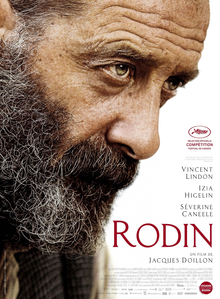

Rodin

Jacques Doillon
2017
119 minutes
Wikipedia link
IMDB link
This is text.
Time to choose something different:
- Balzac was lucky to be around French-speaking people, considering that his name sounds like ball-sack in English. Speaking of which, got any French films that end on untranslatable puns? - Turn to section 189
- I like all the artist model nudity, but what would be really cool is if someone read some feminist Marxist texts to accompany it! - Turn to section 210
- Okay, the French had some pretty good sculptors, but how are they at engineering? - Turn to section 33